クラス選択
01次のクラス名を選ぶ
キーを押すたびに、次のクラス名へ選択が移ります。
- card を選択している状態
- Ctrl + Alt + J を押す
- もう一度押すと、次の行へ
- さらに押すと card__text へ
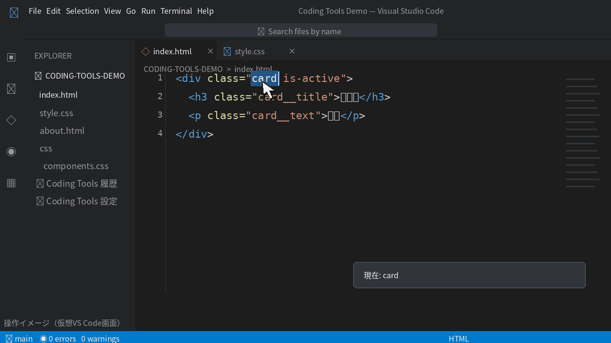
02前のクラス名を選ぶ
後ろから前へ、クラス名を1つずつ選べます。
- card__text を選択している状態
- Ctrl + Alt + K で1つ前へ
- もう一度押すと is-active へ
- もう一度押すと card へ
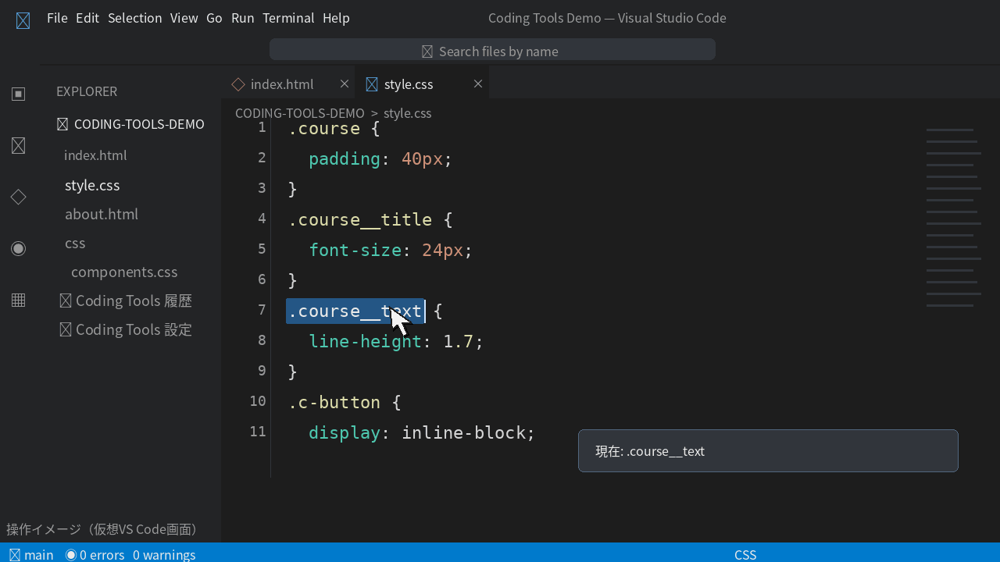
03次のクラスも追加選択する
元の選択を残し、次のクラス名を追加します。
- card を選択
- Ctrl + Alt + Shift + J
- もう一度押して3つを同時選択
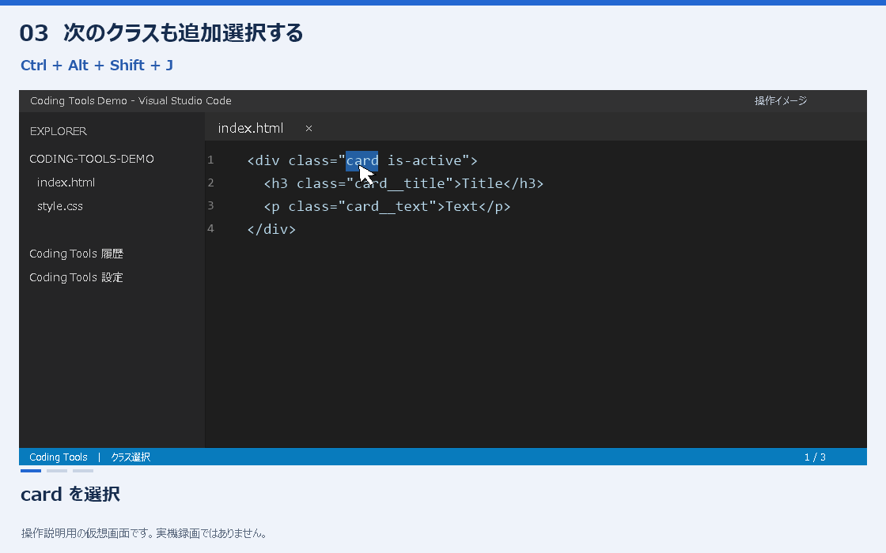
04前のクラスも追加選択する
元の選択を残し、前のクラス名を追加します。
- card__text を選択
- Ctrl + Alt + Shift + K
- もう一度押して is-active も追加
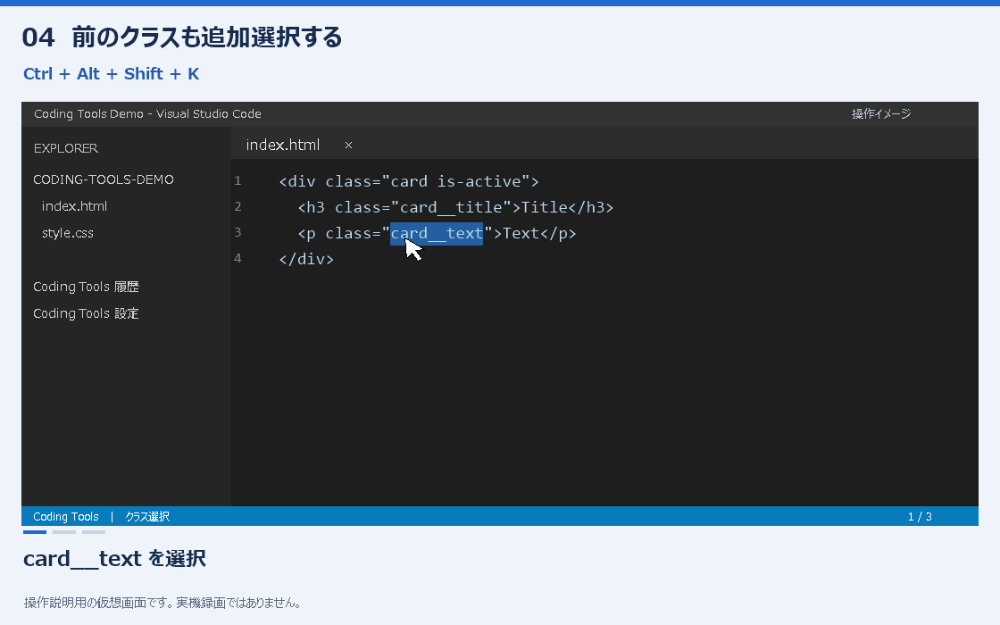
コピー・貼り付け
05保存枠1へコピーする
選んだ文字を保存枠1に覚えさせます。コピーだけではコードは変わりません。
- 保存したい文字を選択
- Ctrl + Alt + Shift + 1 を押す
- 保存枠1に残る。もう片方の枠はそのまま
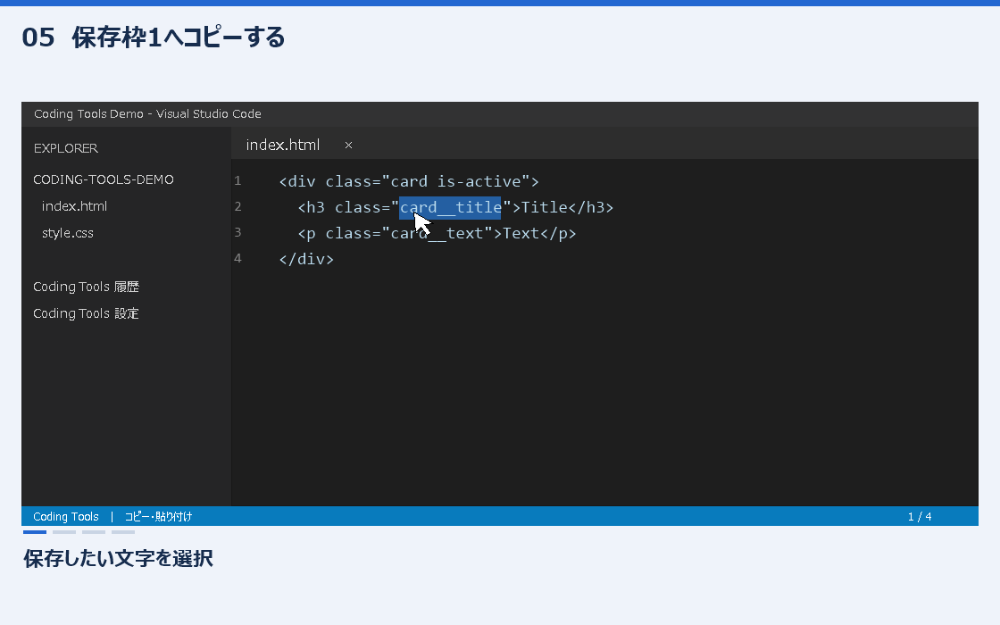
06保存枠1から貼り付ける
保存枠1に覚えた内容を、今のカーソル位置へ貼り付けます。
- 先に保存枠1へコピーしておく
- 貼り付けたい位置で Ctrl + Alt + 1
- 同じ枠は何度でも貼り付けられる
07保存枠2へコピーする
選んだ文字を保存枠2に覚えさせます。コピーだけではコードは変わりません。
- 保存したい文字を選択
- Ctrl + Alt + Shift + 2 を押す
- 保存枠2に残る。もう片方の枠はそのまま
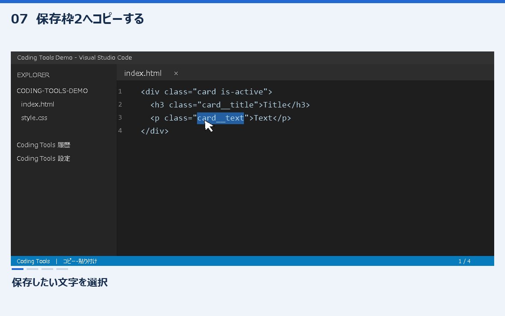
08保存枠2から貼り付ける
保存枠2に覚えた内容を、今のカーソル位置へ貼り付けます。
- 先に保存枠2へコピーしておく
- 貼り付けたい位置で Ctrl + Alt + 2
- 同じ枠は何度でも貼り付けられる
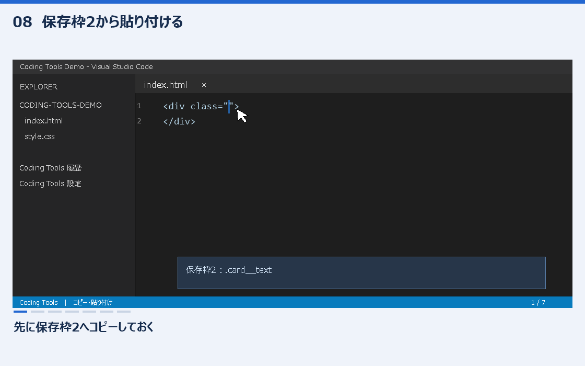
09一覧でコピー先の枠を選ぶ
番号を覚えていなくても、一覧から保存枠を選べます。
- コピーする文字を選択
- 「コピー先を一覧から選択」を実行
- 枠1を選んで Enter
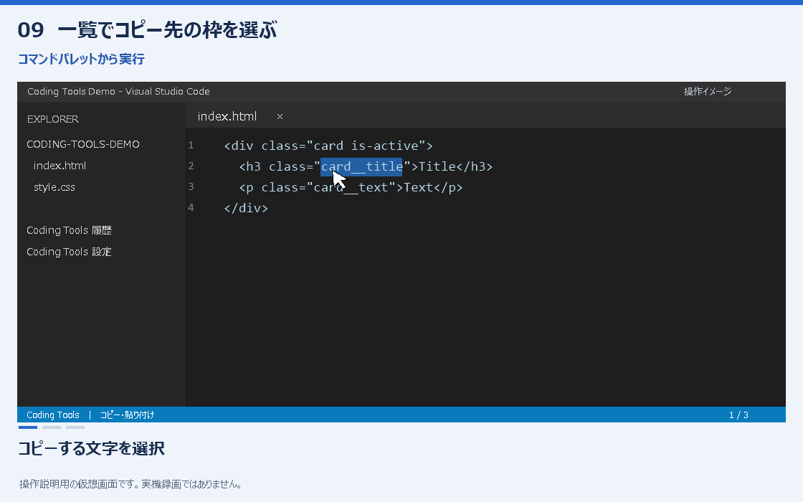
10一覧で貼り付け元の枠を選ぶ
保存してある文字を見ながら、使う枠を選べます。
- 貼り付けたい位置にカーソルを置く
- 「貼り付け元を一覧から選択」を実行
- 枠2を選んで Enter
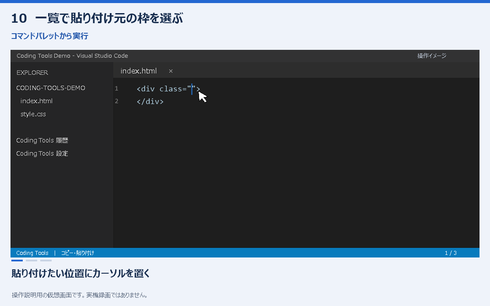
11カーソル上のクラス名をコピー
クラス名の上にカーソルを置くだけで、その名前をコピーできます。
- CSSのクラス名にカーソルを置く
- Ctrl + Alt + Shift + C
- コピーされる文字はドットなし
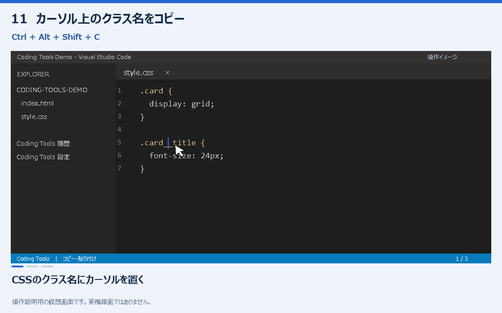
12スマートコピーでドットを外す
クラス名全体を選んで実行すると、ドットなしの名前をコピーします。
- CSSで .card__title 全体を選択
- 「スマートコピー」を実行
- 検索欄などにも使える文字になる
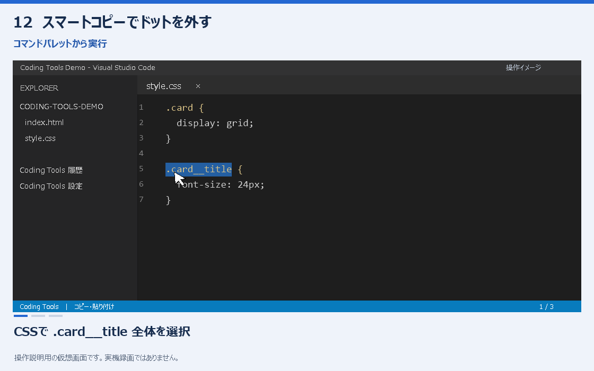
13スマート貼り付けでドットを付ける
拡張機能でコピーしたクラスを、CSSの入力中の位置へ貼り付けます。
- 拡張機能で card__title をコピー済み
- 「CSSスマート貼り付け」を実行
- CSSではドット付きで入力される
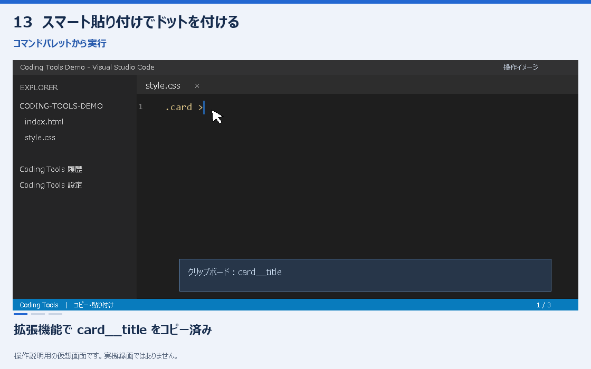
空いている場所で実行した場合は、CSSの追加先を判断する処理へ進みます。
HTMLとCSSの移動
14HTMLからCSS定義へ移動
HTMLのクラス名を選んで、対応するCSSの場所へ直接移動します。
- HTMLの card__title を選択
- Ctrl + Alt + 3 を押す
- CSSの定義が選択される
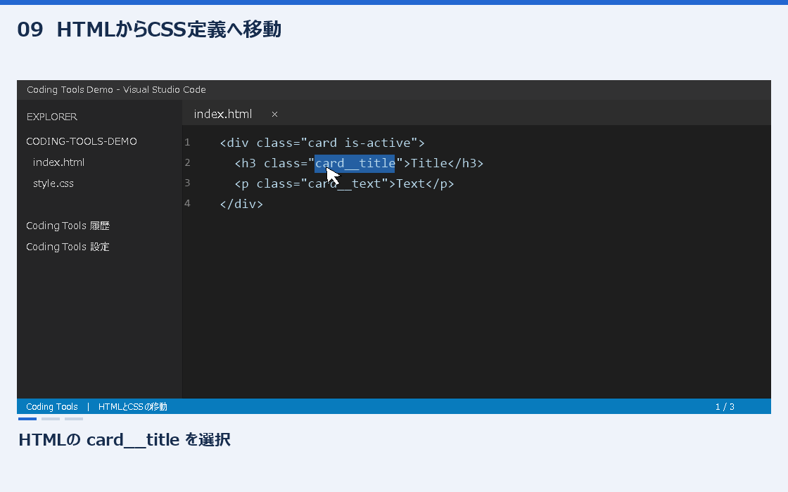
15CSSからHTMLの使用箇所へ移動
CSSのクラス名から、そのクラスを使っているHTMLへ移動します。
- CSSの .card__title を選択
- Ctrl + Alt + 4 を押す
- HTMLの使用箇所が選択される
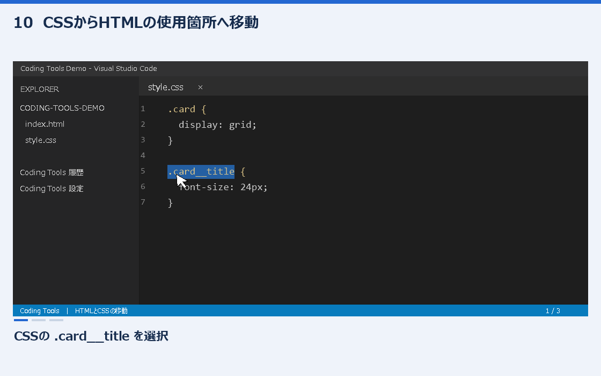
16次のジャンプ候補へ移動
ジャンプ先が複数あるとき、Tabで次の候補へ移れます。
- HTML→CSSのジャンプ直後
- Tab を押す
- さらに Tab で最初の候補へ戻る
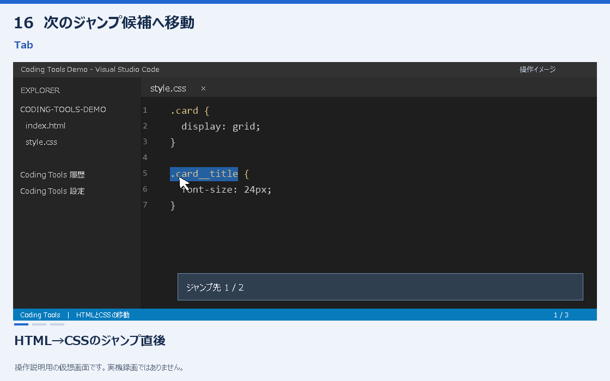
ジャンプ候補の切り替え中だけ、Tabがこの操作になります。
17前のジャンプ候補へ移動
ジャンプ候補をShift + Tabで逆順に見られます。
- ジャンプ先 2 / 2 を表示中
- Shift + Tab を押す
- 前の候補へ戻った
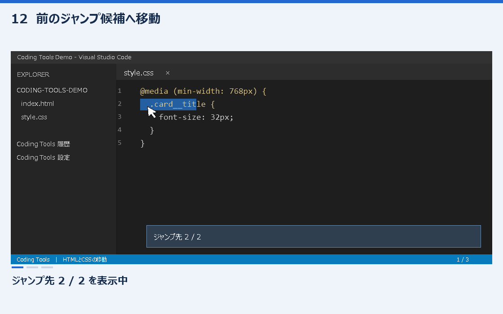
18ジャンプ候補の切り替えを終える
Escで切り替えを終了し、今の場所から編集を続けられます。
- ジャンプ候補の切り替え中
- Esc を押す
- 候補の表示が消え、通常の編集へ
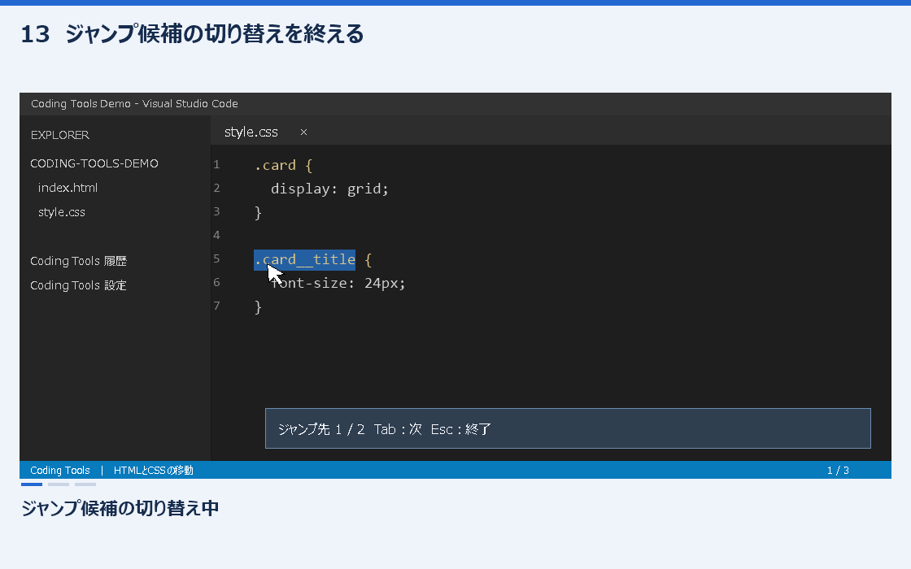
CSSへの追加
19CSSに空のルールを追加する
コピーしたクラスの追加先を調べ、差分を確認してから空のCSSルールを追加します。
- 先に拡張機能で card__text をコピー
- Ctrl + Alt + P でCSS追加を実行
- 変更前と変更後を確認する
- 「差分を確認して適用」を選ぶ
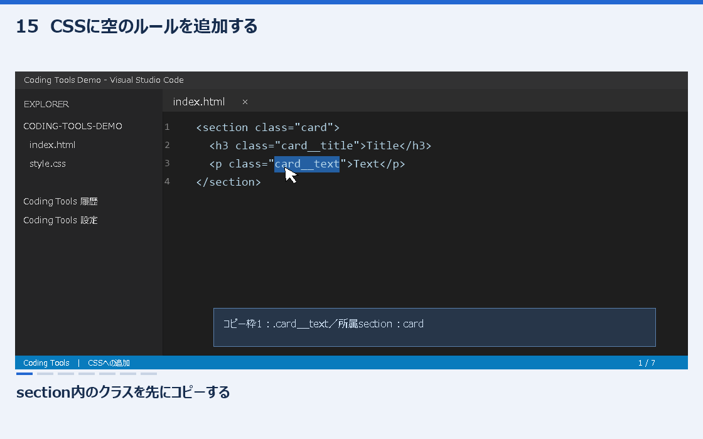
最終確認ONの場合の流れです。既存のCSSルールは移動・書き換えしません。
20同名のCSSがあれば、その場所へ移動
既存ルールへ移動する候補を選ぶと、CSSを書き換えずに目的の場所を開きます。
- card__title をコピー済みで Ctrl + Alt + P
- 既存へ移動の候補を選ぶ
- Enter で既存の場所へ
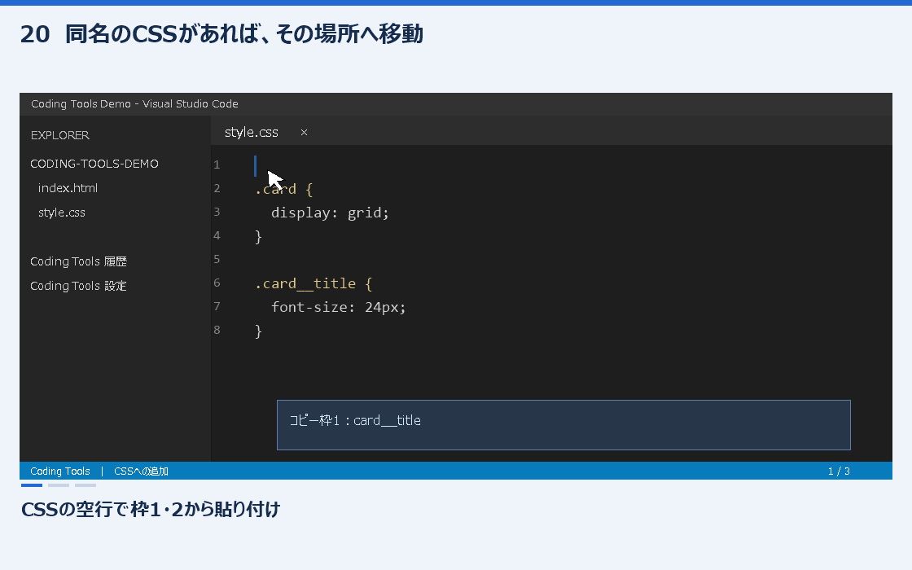
21追加先のCSSファイルを選ぶ
CSSファイルが複数あり追加先を決められない場合は、自分でファイルを選びます。
- HTMLからCSS追加を実行
- 使うCSSファイルを選ぶ
- 選んだCSSで追加先の確認へ進む
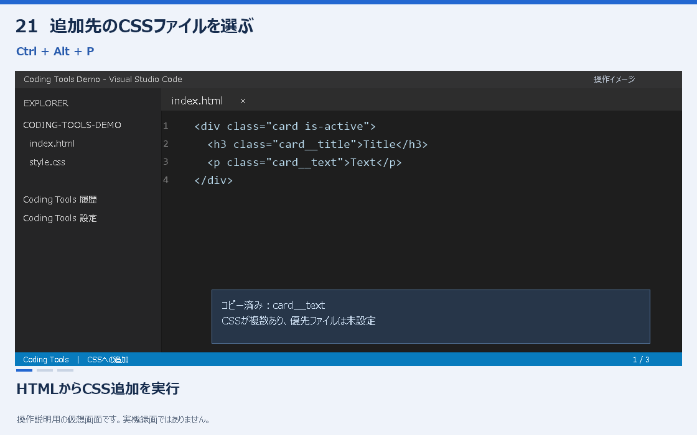
22既存の条件内へ追加する
既存の@mediaなどを選び、その条件の中へ空のルールを追加できます。
- 追加先の候補画面を開く
- 条件を選んで Enter
- 選んだ条件内に追加される差分を見る
- 最終確認で適用する
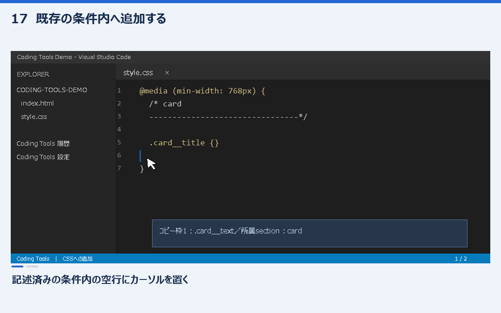
23新しい@mediaを作って追加する
条件付きCSSの候補から、新しい@mediaを入力して追加できます。
- 条件付きCSSの追加先を開く
- 作る条件を入力して Enter
- 新しい条件と空ルールを差分で確認
- 適用すると、条件付きルールが増える
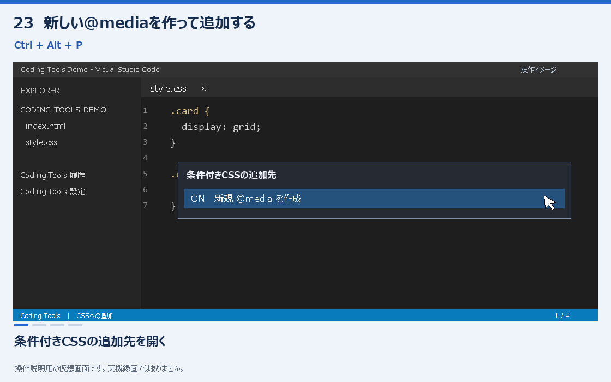
24関係や状態を指定して追加する
追加先の候補から、隣接・状態などを表すセレクタを入力できます。
- .card の追加先候補を表示
- 追加するセレクタを入力
- 候補選択後、差分を確認する
- 適用後は指定した空ルールが増える
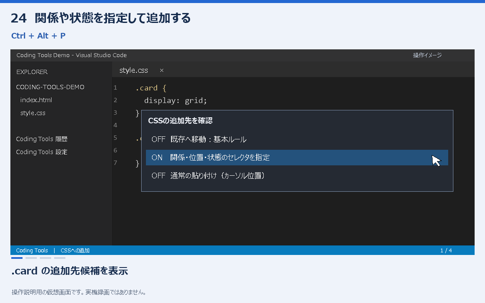
25貼り付け方法から通常貼り付けを選ぶ
貼り付け方法の画面で「通常の貼り付け」を選ぶと、今の位置へ文字を入れます。
- セレクタ文字列 .card をコピー済み
- Ctrl + Alt + V を押す
- Enter。最終確認ONなら、もう一度確定
- 現在のカーソル位置に貼り付けられる
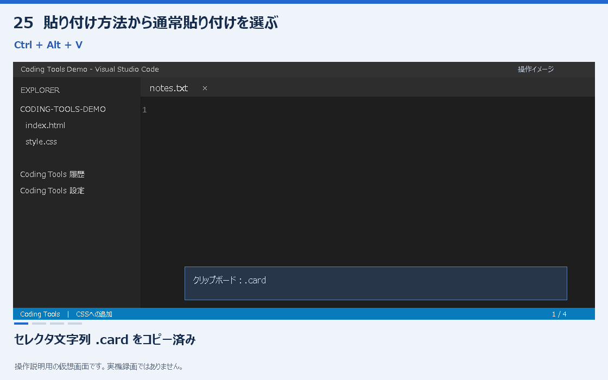
26貼り付け方法からCSS追加を選ぶ
CSSへ整理する方を選ぶと、CSS追加先の判断と差分確認へ進みます。
- card__text を拡張機能でコピー済み
- Ctrl + Alt + V でCSS追加を選ぶ
- CSSファイルと追加先を選び、差分を確認
- 最終確認で適用する
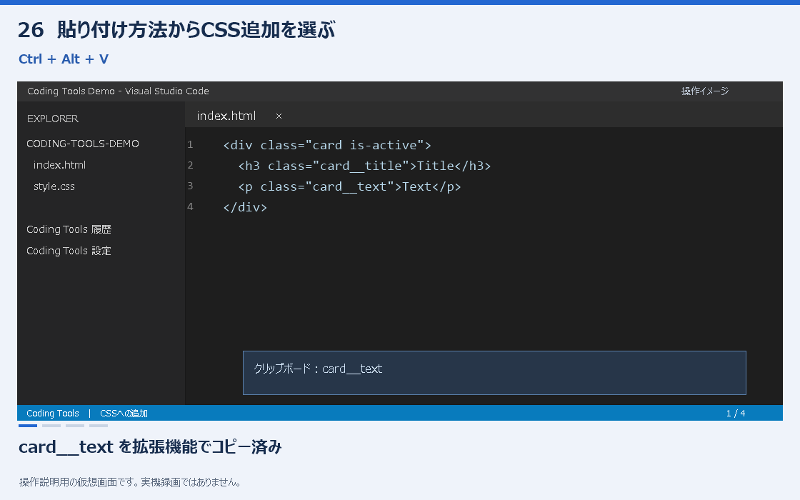
27差分を確認してから適用する
最終確認ONのときは、差分を見て適用ボタンを押すまで元のCSSは変わりません。
- 追加される行を左右で見比べる
- 「差分を確認して適用」を選ぶ
- 適用後、編集用のCSSが開く
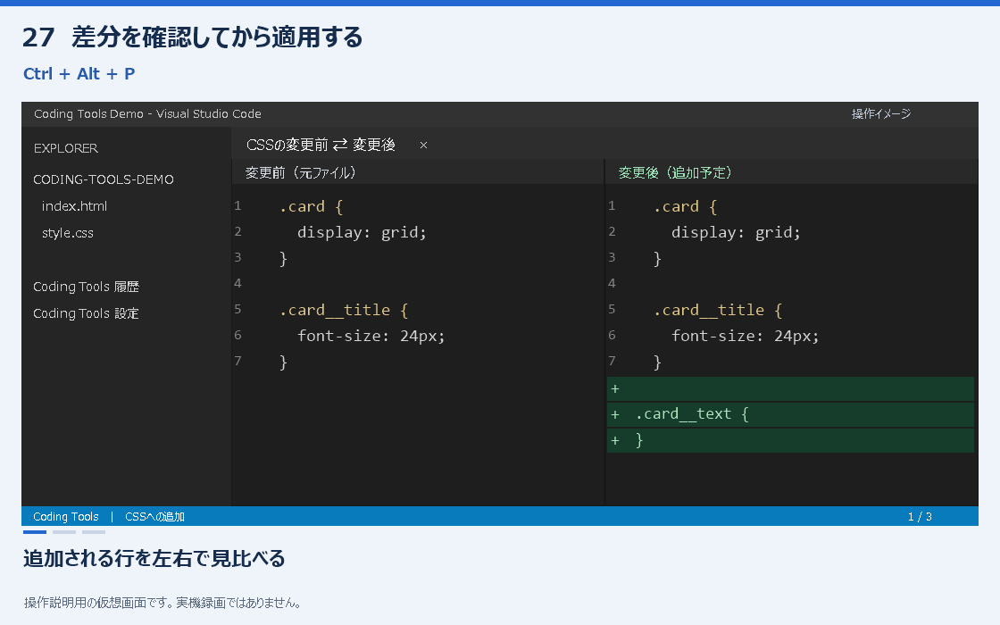
28CSS追加をキャンセルする
差分確認でキャンセルすると、元のCSSを変更せずに終わります。
- 差分プレビューを表示
- キャンセルを選ぶ
- 元のCSSには追加されていない
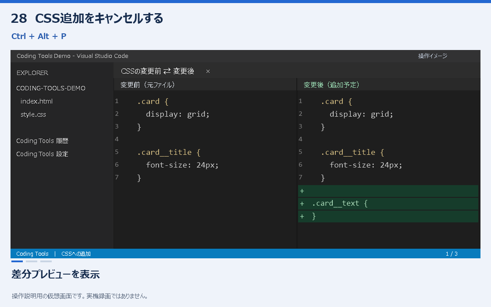
29CSSを解析できなければ中止する
構文が壊れているなど、安全に追加できない場合は編集を中止します。
- 閉じかっこが足りないCSS
- Ctrl + Alt + P を実行
- 自動では変更されない
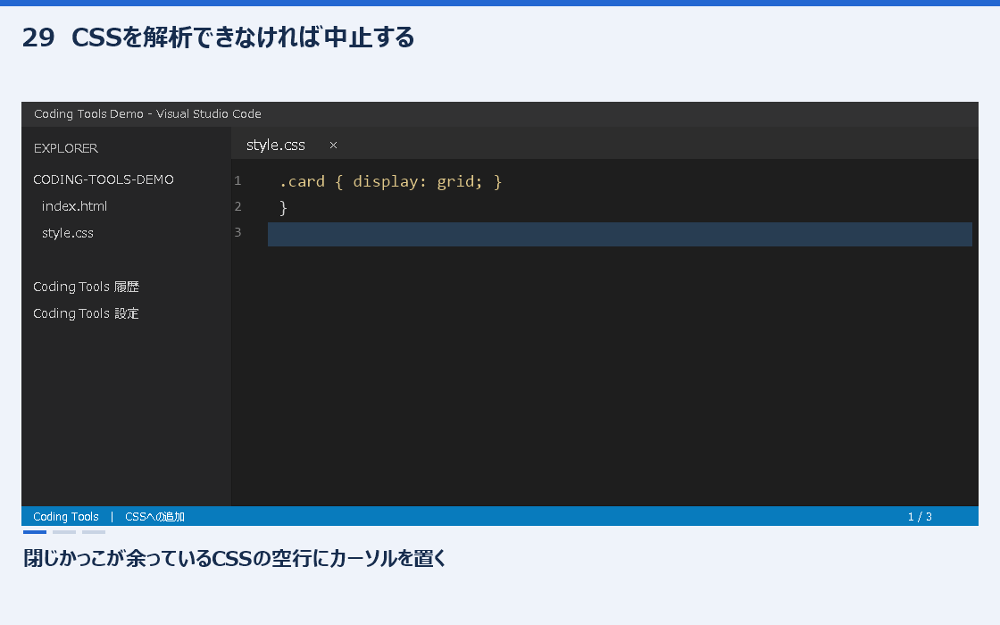
30追加したCSSを元に戻す
追加直後にVS Code標準のCtrl + Zで、その編集を取り消せます。
- 空の .card__text を追加した直後
- Ctrl + Z を押す
- 追加前の内容に戻る
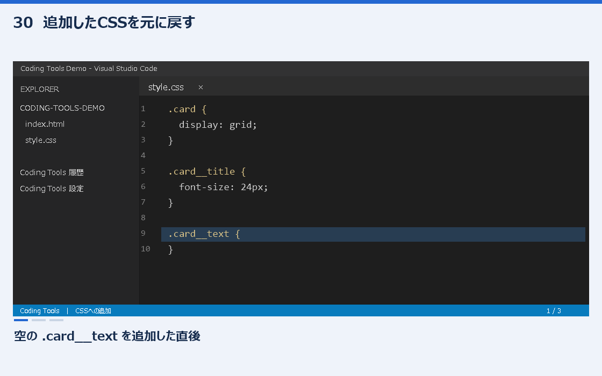
直前の編集を戻す操作です。間に別の編集をした場合は、その編集から戻ります。
履歴
31履歴パネルを開く
エクスプローラー内の「Coding Tools 履歴」を開きます。
- エディタで作業している状態
- Ctrl + Alt + H を押す
- 履歴の種類と月を展開する
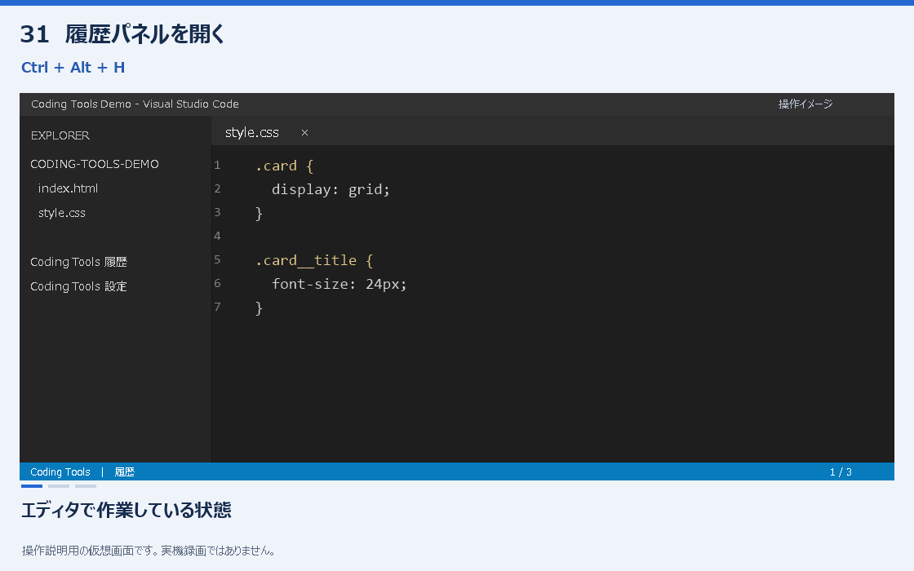
32履歴を一覧から選ぶ
日時とファイル名の一覧から、見たい差分を選べます。
- 「差分履歴の一覧を開く」を実行
- 見たい履歴を選択
- Enterで差分ファイルが開く
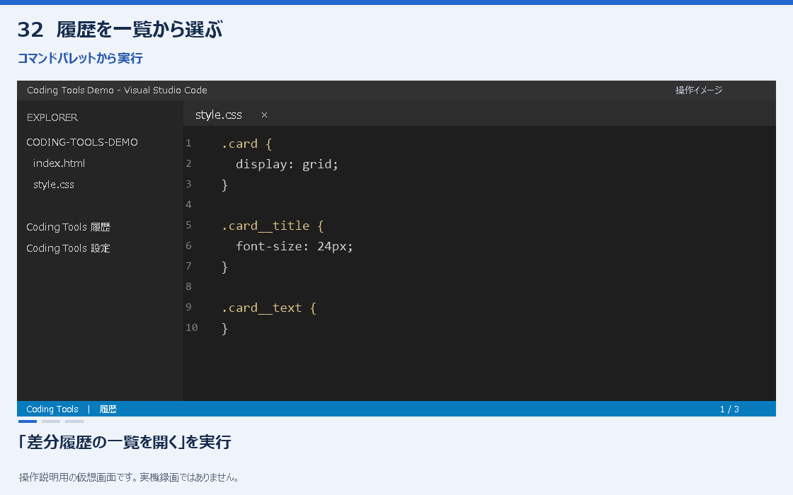
33最新の差分を開く
一番新しく記録された差分を、一覧選択なしで開きます。
- 「最新の差分を開く」を実行
- 最新の差分ファイルが開く
- 追加行は +、削除行は - で確認する
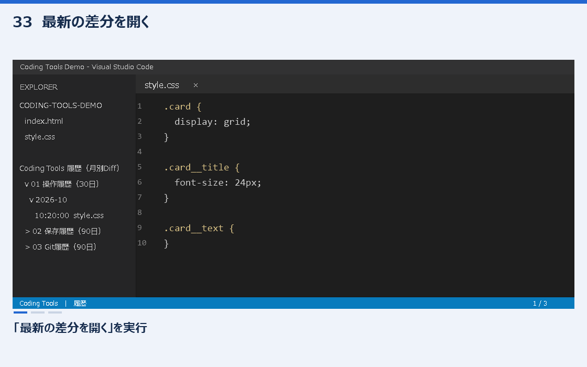
34履歴の行をクリックして差分を見る
月の中にある履歴の行を選ぶと、その変更内容が開きます。
- 操作履歴と月を展開する
- 10:20:00 style.css をクリック
- 選んだ履歴の差分が開く
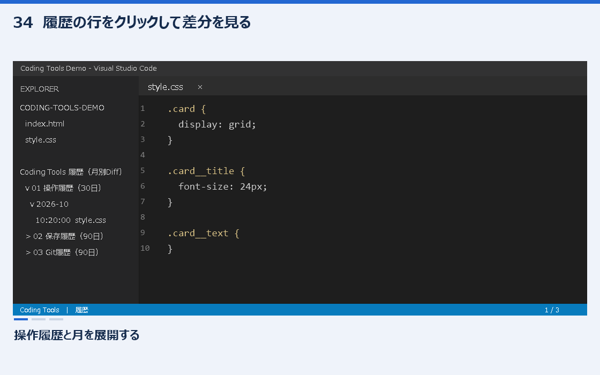
35履歴から変更元ファイルを開く
履歴の行から、編集した元ファイルの場所へ戻れます。
- 履歴の行を右クリックする
- 「差分の変更元ファイルへ移動」を選ぶ
- 元の style.css の変更箇所が開く
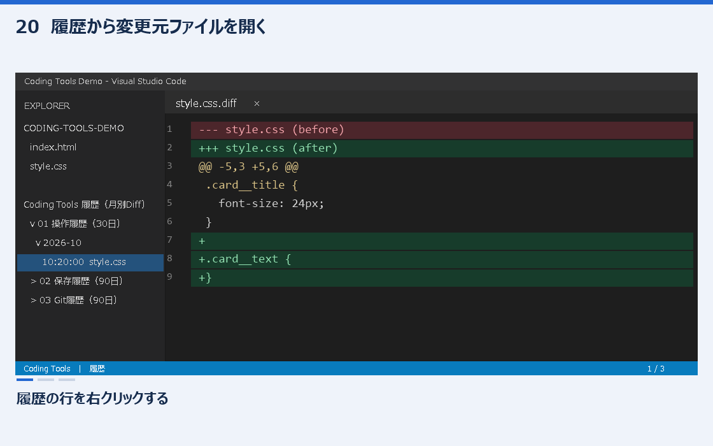
Git pushの履歴から実行した場合は、ソース管理画面を開きます。
36履歴の表示を更新する
保存済みの履歴を読み直して、パネルの表示を更新します。
- 履歴パネルを表示中
- パネル上の「差分履歴を更新」を実行
- 現在の保存内容で表示される
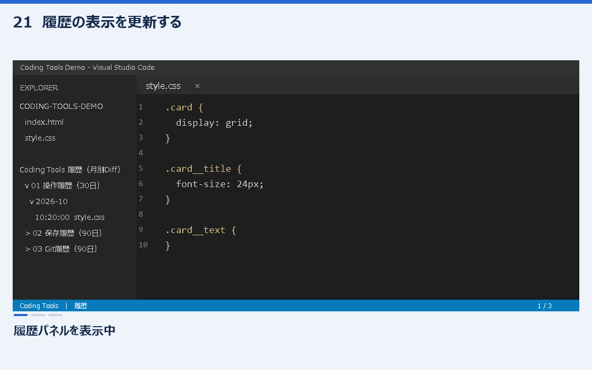
37履歴フォルダーを開く
保存された履歴のフォルダーを、OSのエクスプローラーで開きます。
- 「履歴フォルダーをOSで開く」を実行
- 履歴保存先のフォルダーが開く
- 保存されている差分ファイルを確認できる
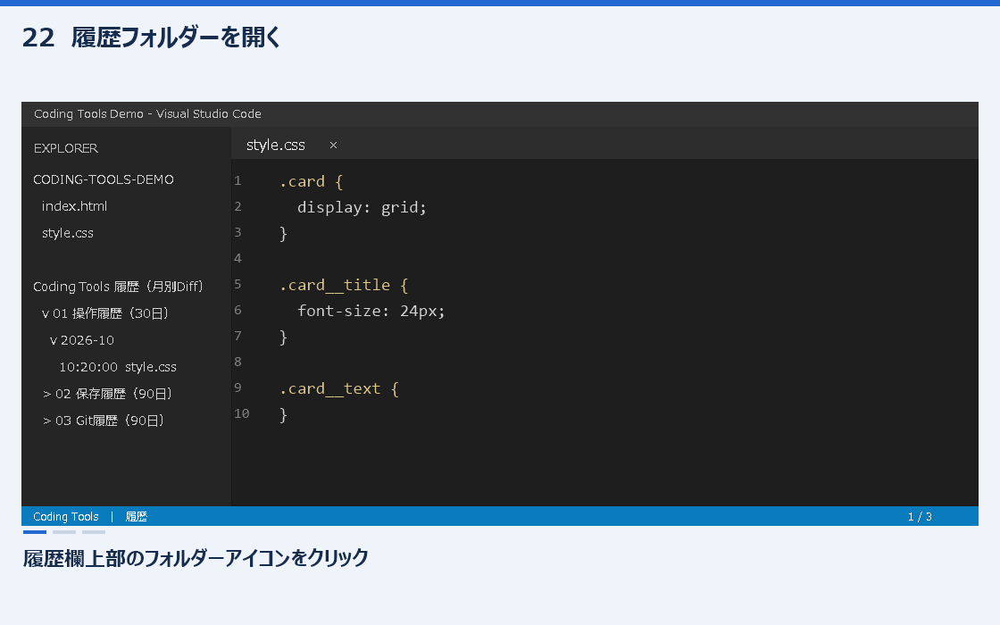
38ファイル保存時の差分を残す
保存履歴がONなら、前回保存した内容からの変更を保存時に記録します。
- 前回保存したCSS
- font-size を 24px から 28px に編集
- Ctrl + S でファイルを保存
- 保存履歴で差分を確認できる
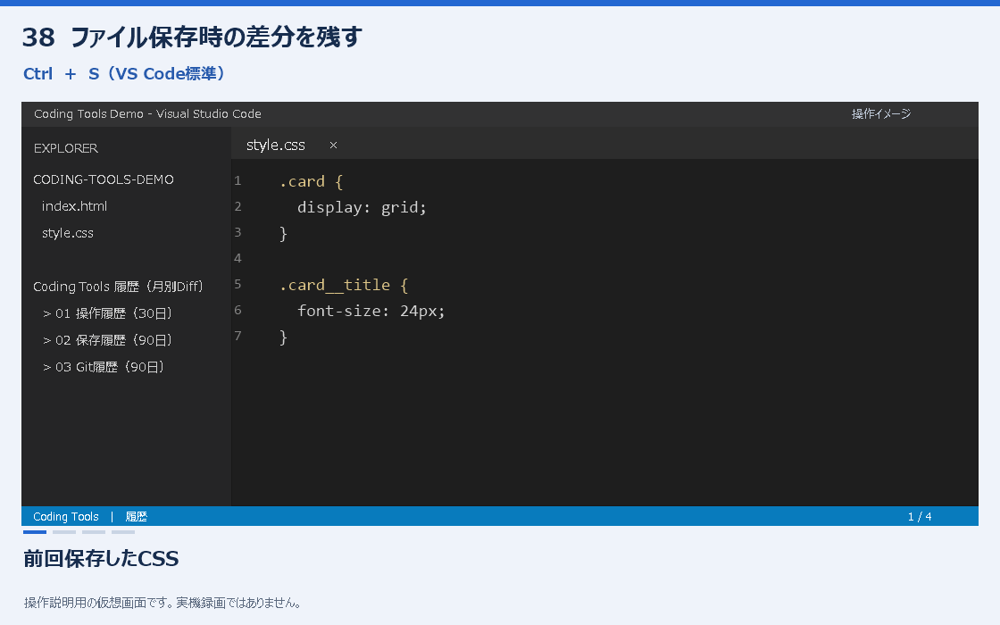
同じ内容を保存しただけの場合は記録しません。
39Coding ToolsからGit pushして記録する
専用コマンドでpushが成功した場合に、Git push履歴を記録します。
- 実行前にブランチと送信先を準備
- 「Git pushを実行して履歴を記録」を実行
- 「実行」を選び、push成功を待つ
- Git履歴ONなら記録される
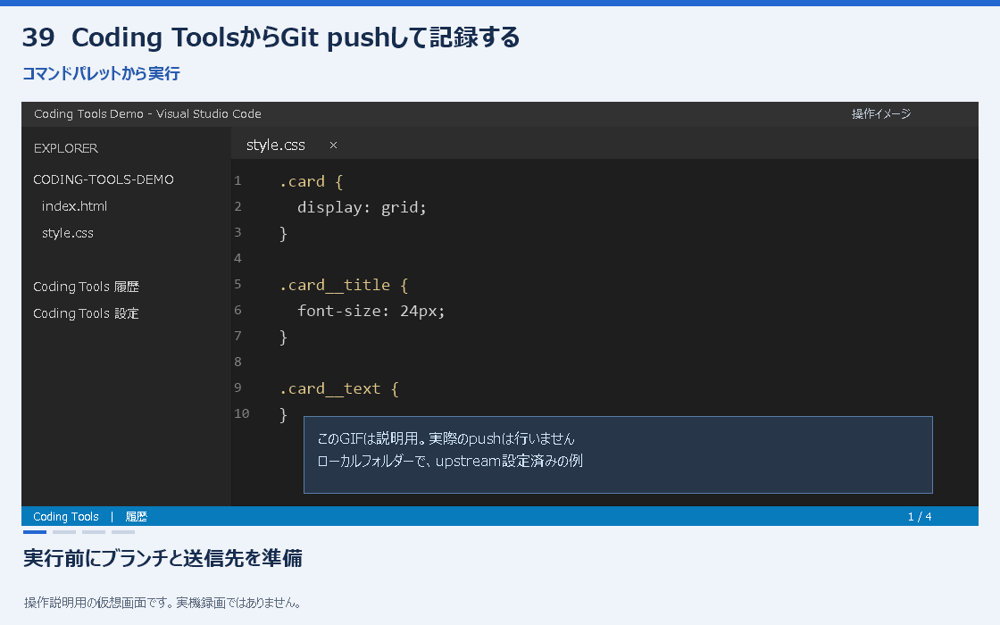
通常のターミナルや、ほかの拡張機能から行ったpushは記録の対象外です。
設定
40Coding Toolsの設定を開く
エクスプローラー内の「Coding Tools 設定」を表示します。
- 「履歴・最終確認の設定を開く」を実行
- エクスプローラーの設定欄へ移動
- 変更したい設定を選べる
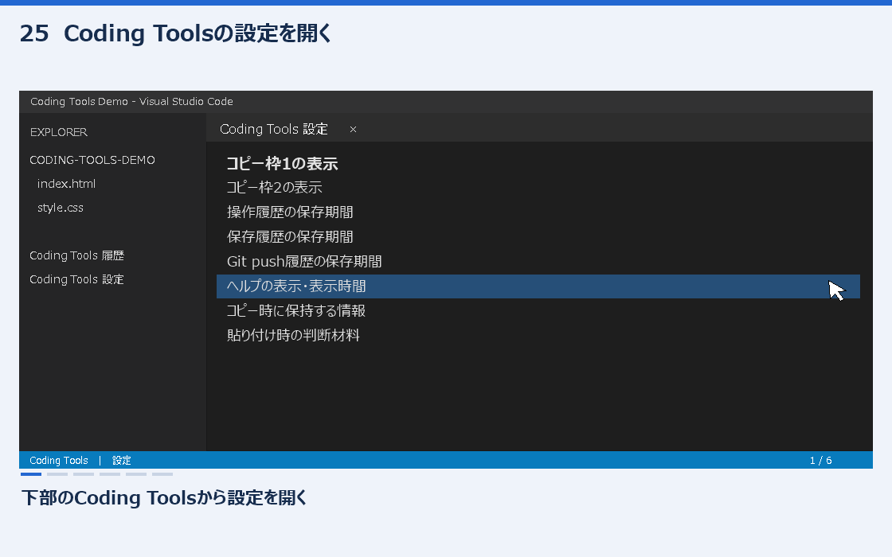
41操作履歴の記録をON/OFF
設定欄の項目をクリックするか、選択してEnterを押すとON/OFFが切り替わります。
- 操作履歴の記録は現在ON
- 対象の行で Enter を押す
- もう一度 Enter でONに戻す
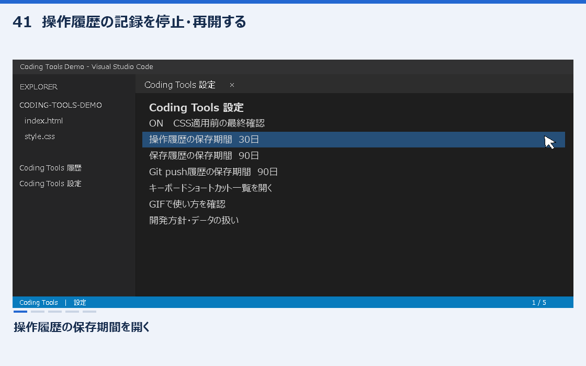
OFFでも、すでに保存されている履歴はそのままです。
42保存履歴の記録をON/OFF
設定欄の項目をクリックするか、選択してEnterを押すとON/OFFが切り替わります。
- 保存履歴の記録は現在ON
- 対象の行で Enter を押す
- もう一度 Enter でONに戻す
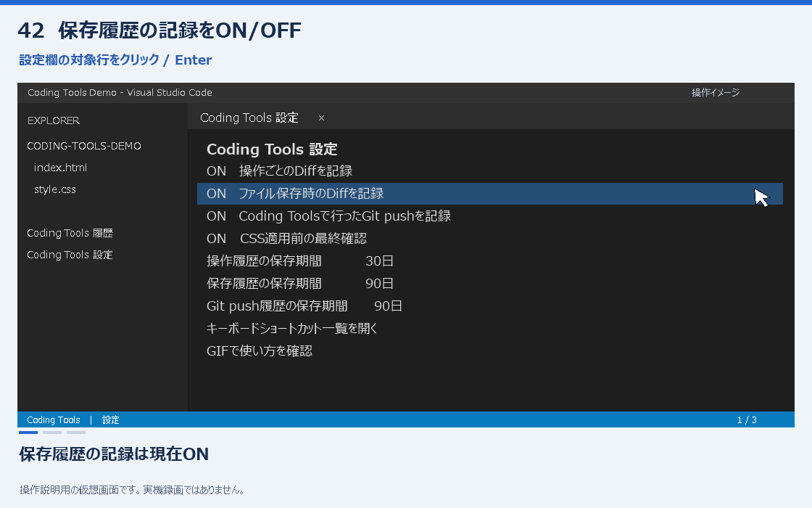
OFFでも、すでに保存されている履歴はそのままです。
43Git push履歴の記録をON/OFF
設定欄の項目をクリックするか、選択してEnterを押すとON/OFFが切り替わります。
- Git push履歴の記録は現在ON
- 対象の行で Enter を押す
- もう一度 Enter でONに戻す
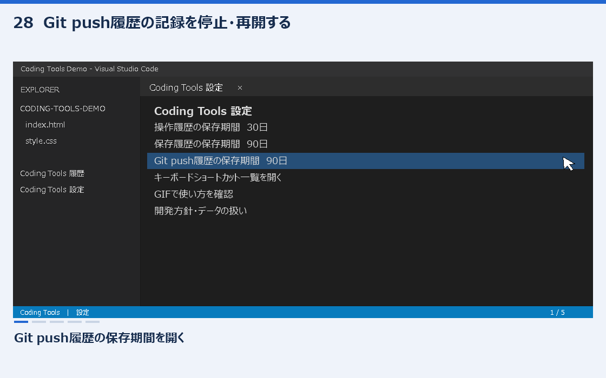
OFFでも、すでに保存されている履歴はそのままです。Git pushの実行自体もこの設定では止まりません。
44CSS適用前の最終確認をON/OFF
設定欄の項目をクリックするか、選択してEnterを押すとON/OFFが切り替わります。
- CSS適用前の最終確認は現在ON
- 対象の行で Enter を押す
- もう一度 Enter でONに戻す
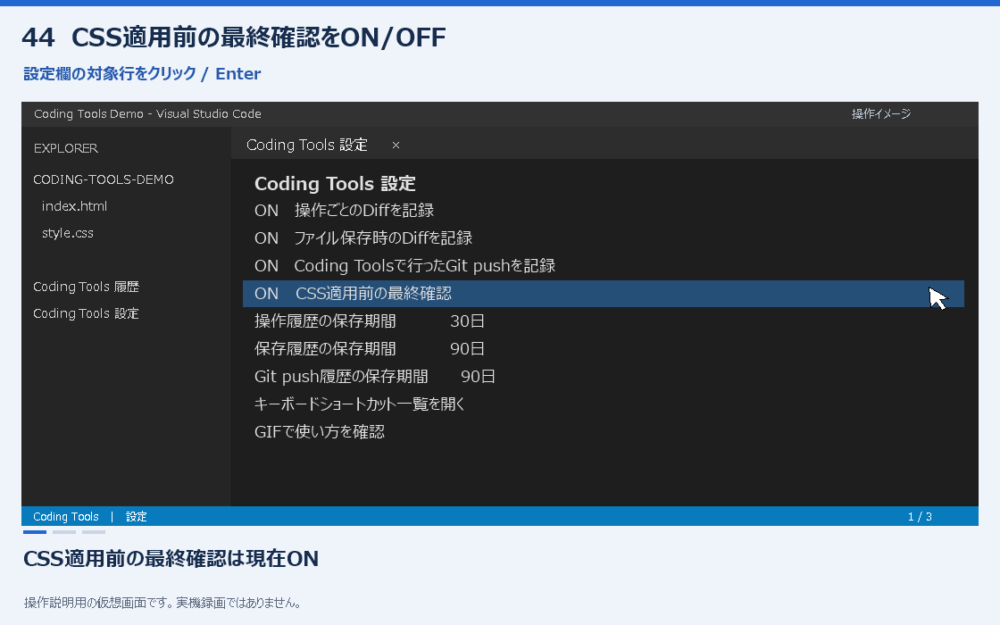
OFFでも差分プレビューと配置候補の選択は残ります。最後の適用確認だけを省略します。
45操作履歴の保存期間を変える
操作履歴について、履歴を残す日数を1〜360日で設定できます。
- 操作履歴の保存期間の行を選ぶ
- 行を開いて日数を選ぶ
- 180日を選んで Enter
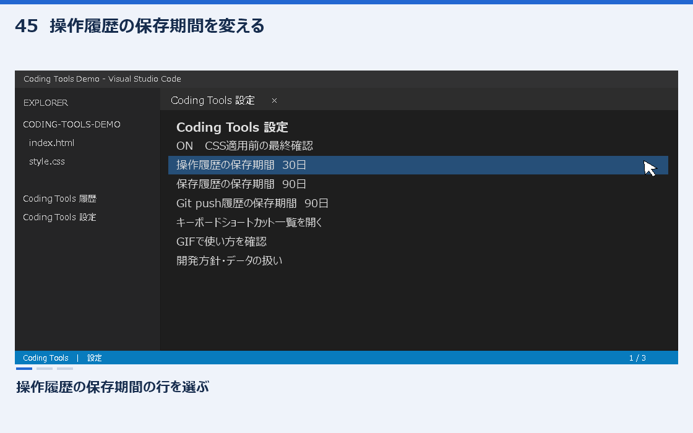
任意の日数を入力する場合も、1〜360の整数を指定します。古い履歴は整理時に削除されます。
46保存履歴の保存期間を変える
保存履歴について、履歴を残す日数を1〜360日で設定できます。
- 保存履歴の保存期間の行を選ぶ
- 行を開いて日数を選ぶ
- 180日を選んで Enter
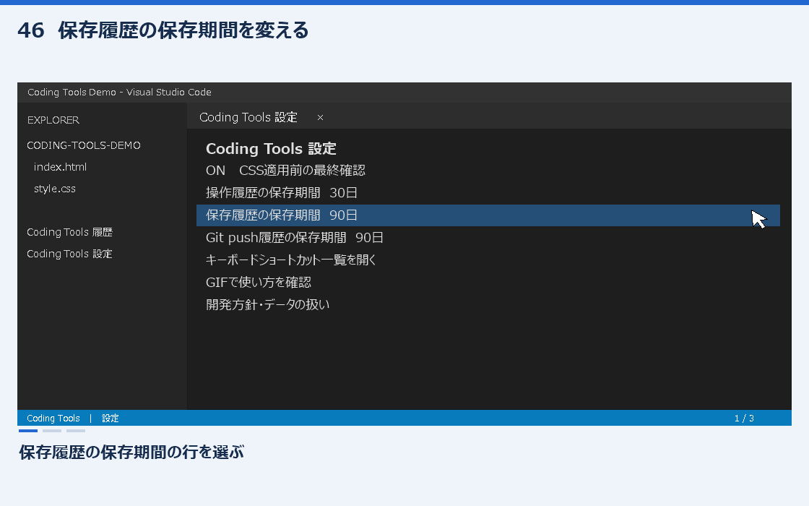
任意の日数を入力する場合も、1〜360の整数を指定します。古い履歴は整理時に削除されます。
47Git push履歴の保存期間を変える
Git push履歴について、履歴を残す日数を1〜360日で設定できます。
- Git push履歴の保存期間の行を選ぶ
- 行を開いて日数を選ぶ
- 180日を選んで Enter
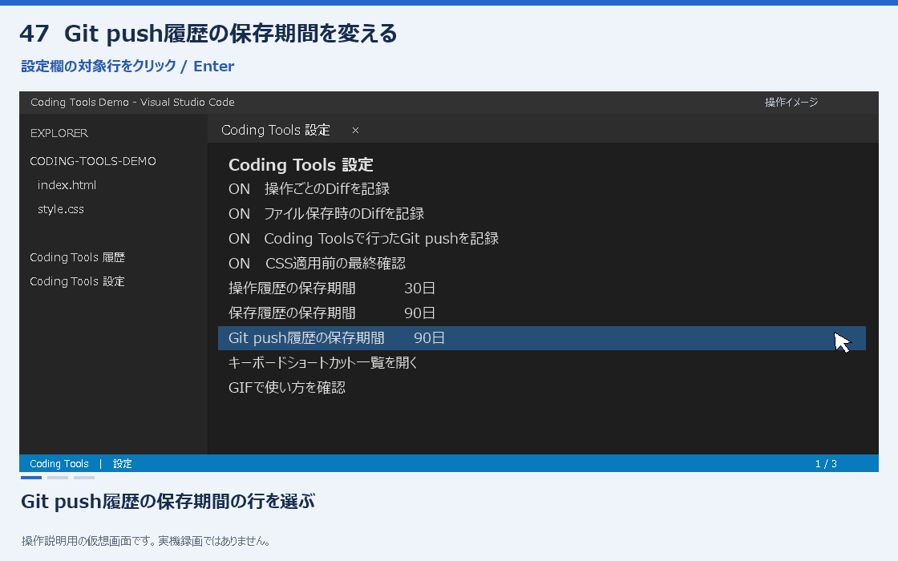
任意の日数を入力する場合も、1〜360の整数を指定します。古い履歴は整理時に削除されます。
48ショートカット一覧を開いて変える
VS Code標準のショートカット一覧で、Coding Toolsのキーを変更できます。
- 設定欄のショートカット一覧を開く
- 検索欄に Coding Tools を入力
- 変えたい行のキー変更を開く
- 重複を確認してから使用する
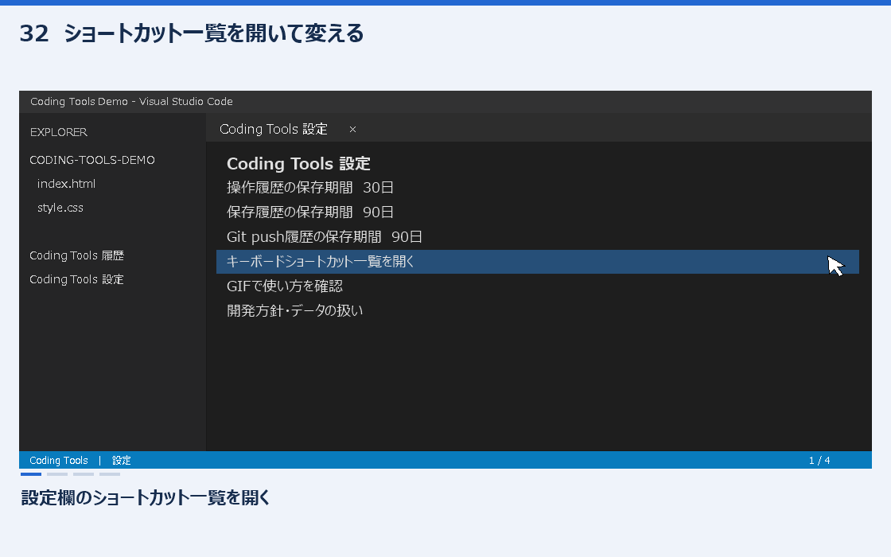
49このGIFガイドを開く
Coding Toolsの設定欄から、1操作ずつのGIFガイドを開けます。
- 設定欄の使い方ガイドを選ぶ
- VS Code内にガイドが開く
- 見たい操作の見出しを開く
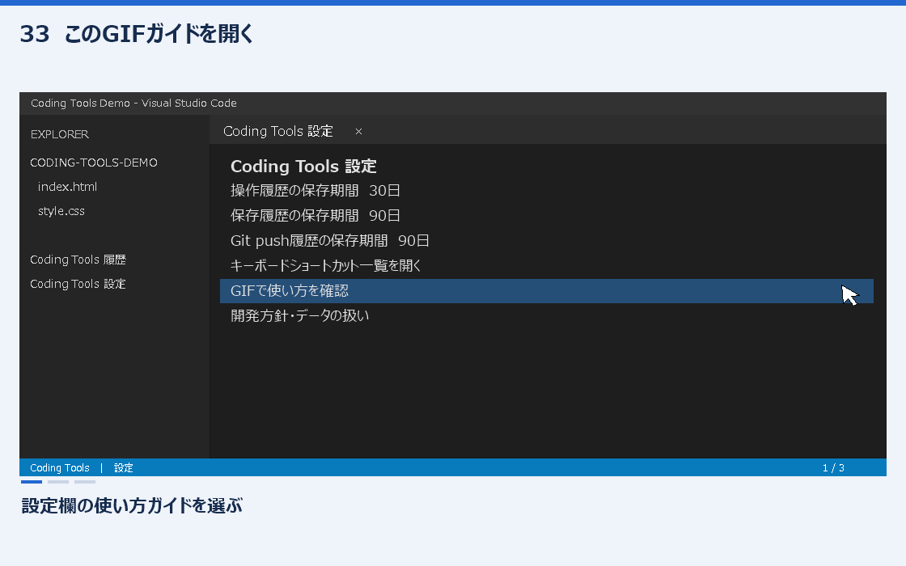
CSSの設定
50優先するCSSファイルを指定する
VS Codeの設定で、HTMLから追加するときに使うCSSファイルを指定できます。
- Coding Toolsの優先CSS設定を開く
- ワークスペースの相対パスを入力
- 一致するCSSが1件なら、そのファイルを優先
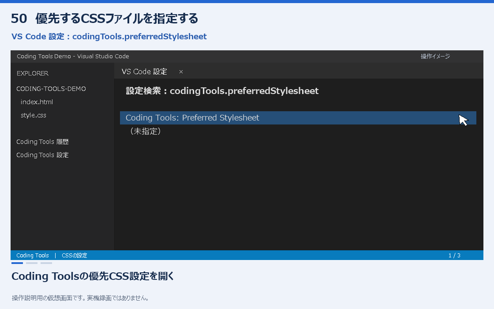
このCSS配置設定はVS Codeのsettings.jsonで管理します。履歴のON/OFF設定とは保存先が異なります。
51クラスの接頭辞ごとに追加先を指定する
クラス名の接頭辞に応じて、基本ルールか既存の@mediaを優先できます。
- VS Codeのワークスペース設定を開く
- card__text をコピーしてCSS追加を実行
- 指定された条件内の差分を確認する
- 適用後、条件内に空ルールが増える
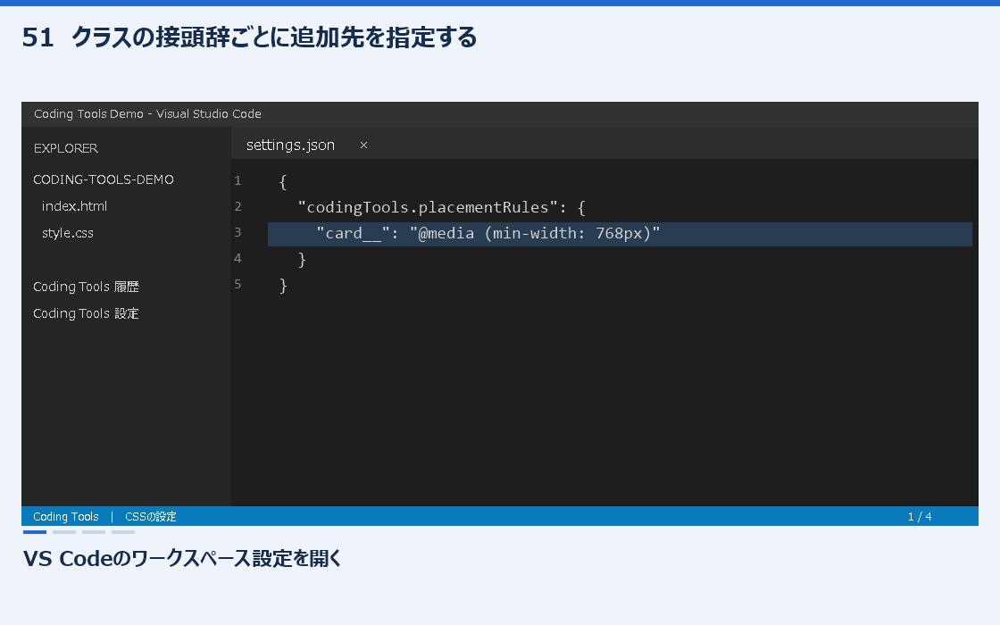
値をbaseにすると基本ルールを優先します。該当する条件が一意に見つからない場合は、通常の追加先判断へ進みます。